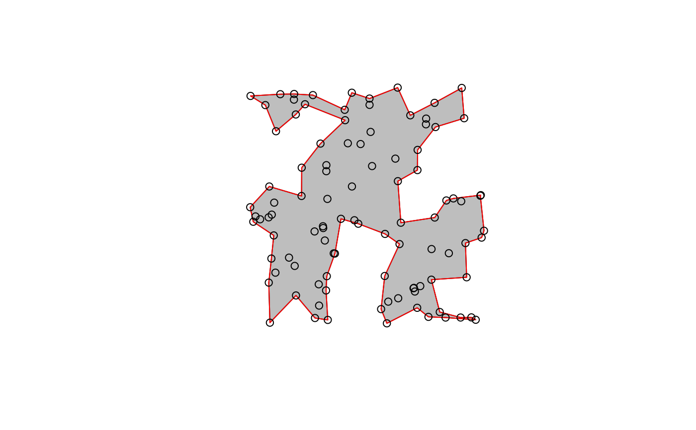
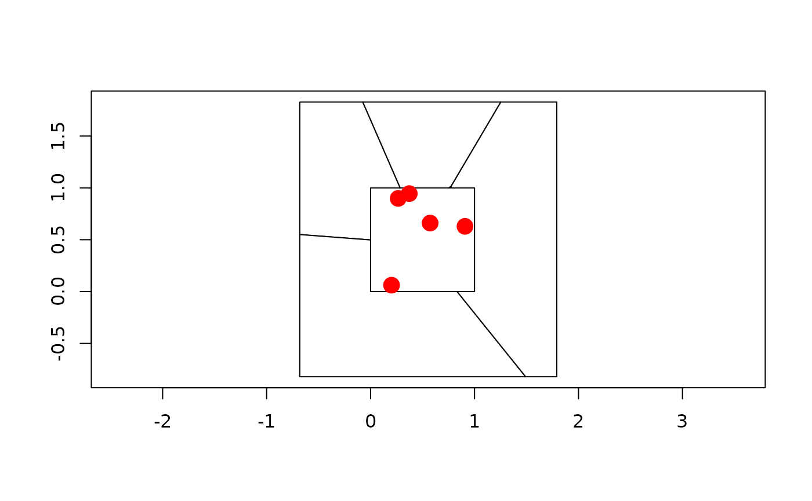
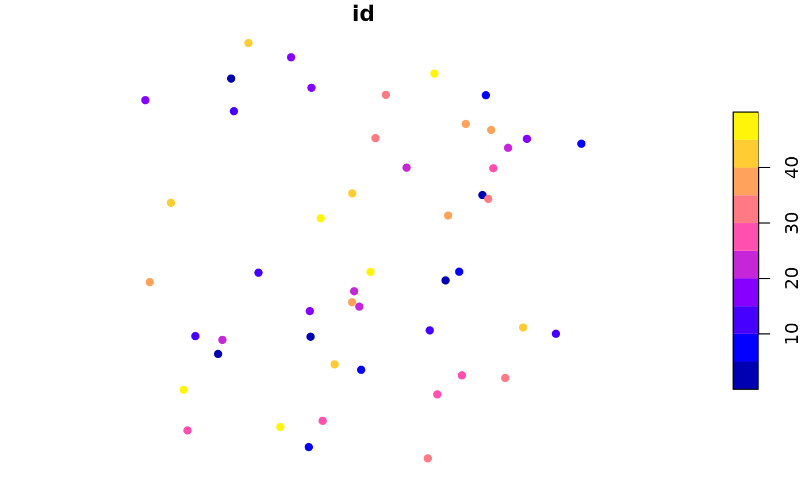

Geometric unary operations on simple feature geometries. These are all generics, with methods for sfg, sfc and sf objects, returning an object of the same class. All operations work on a per-feature basis, ignoring all other features.
st_buffer(x, dist, nQuadSegs = 30, endCapStyle = "ROUND", joinStyle = "ROUND", mitreLimit = 1) st_boundary(x) st_convex_hull(x) st_simplify(x, preserveTopology = FALSE, dTolerance = 0) st_triangulate(x, dTolerance = 0, bOnlyEdges = FALSE) st_voronoi(x, envelope, dTolerance = 0, bOnlyEdges = FALSE) st_polygonize(x) st_line_merge(x) st_centroid(x, ..., of_largest_polygon = FALSE) st_point_on_surface(x) st_node(x) st_segmentize(x, dfMaxLength, ...)
Arguments
| x | object of class |
|---|---|
| dist | numeric; buffer distance for all, or for each of the elements in |
| nQuadSegs | integer; number of segments per quadrant (fourth of a circle), for all or per-feature |
| endCapStyle | character; style of line ends, one of 'ROUND', 'FLAT', 'SQUARE' |
| joinStyle | character; style of line joins, one of 'ROUND', 'MITRE', 'BEVEL' |
| mitreLimit | numeric; limit of extension for a join if |
| preserveTopology | logical; carry out topology preserving simplification? May be specified for each, or for all feature geometries. Note that topology is preserved only for single feature geometries, not for sets of them. |
| dTolerance | numeric; tolerance parameter, specified for all or for each feature geometry. |
| bOnlyEdges | logical; if TRUE, return lines, else return polygons |
| envelope | object of class |
| ... | ignored |
| of_largest_polygon | logical; for |
| dfMaxLength | maximum length of a line segment. If |
Value
an object of the same class of x, with manipulated geometry.
Details
st_buffer computes a buffer around this geometry/each geometry. If any of endCapStyle,
joinStyle, or mitreLimit are set to non-default values ('ROUND', 'ROUND', 1.0 respectively) then
the underlying 'buffer with style' GEOS function is used.
See postgis.net/docs/ST_Buffer.html for details.
st_boundary returns the boundary of a geometry
st_convex_hull creates the convex hull of a set of points
st_simplify simplifies lines by removing vertices
st_triangulate triangulates set of points (not constrained). st_triangulate requires GEOS version 3.4 or above
st_voronoi creates voronoi tesselation. st_voronoi requires GEOS version 3.5 or above
st_polygonize creates polygon from lines that form a closed ring. In case of st_polygonize, x must be an object of class LINESTRING or MULTILINESTRING, or an sfc geometry list-column object containing these
st_line_merge merges lines. In case of st_line_merge, x must be an object of class MULTILINESTRING, or an sfc geometry list-column object containing these
st_centroid gives the centroid of a geometry
st_point_on_surface returns a point guaranteed to be on the (multi)surface.
st_node adds nodes to linear geometries at intersections without a node, and only works on individual linear geometries
st_segmentize adds points to straight lines
Examples
## st_buffer, style options (taken from rgeos gBuffer) l1 = st_as_sfc("LINESTRING(0 0,1 5,4 5,5 2,8 2,9 4,4 6.5)") op = par(mfrow=c(2,3)) plot(st_buffer(l1, dist = 1, endCapStyle="ROUND"), reset = FALSE, main = "endCapStyle: ROUND") plot(l1,col='blue',add=TRUE) plot(st_buffer(l1, dist = 1, endCapStyle="FLAT"), reset = FALSE, main = "endCapStyle: FLAT") plot(l1,col='blue',add=TRUE) plot(st_buffer(l1, dist = 1, endCapStyle="SQUARE"), reset = FALSE, main = "endCapStyle: SQUARE") plot(l1,col='blue',add=TRUE) plot(st_buffer(l1, dist = 1, nQuadSegs=1), reset = FALSE, main = "nQuadSegs: 1") plot(l1,col='blue',add=TRUE) plot(st_buffer(l1, dist = 1, nQuadSegs=2), reset = FALSE, main = "nQuadSegs: 2") plot(l1,col='blue',add=TRUE) plot(st_buffer(l1, dist = 1, nQuadSegs= 5), reset = FALSE, main = "nQuadSegs: 5")par(op) l2 = st_as_sfc("LINESTRING(0 0,1 5,3 2)") op = par(mfrow = c(2, 3)) plot(st_buffer(l2, dist = 1, joinStyle="ROUND"), reset = FALSE, main = "joinStyle: ROUND") plot(l2, col = 'blue', add = TRUE) plot(st_buffer(l2, dist = 1, joinStyle="MITRE"), reset = FALSE, main = "joinStyle: MITRE") plot(l2, col= 'blue', add = TRUE) plot(st_buffer(l2, dist = 1, joinStyle="BEVEL"), reset = FALSE, main = "joinStyle: BEVEL") plot(l2, col= 'blue', add=TRUE) plot(st_buffer(l2, dist = 1, joinStyle="MITRE" , mitreLimit=0.5), reset = FALSE, main = "mitreLimit: 0.5") plot(l2, col = 'blue', add = TRUE) plot(st_buffer(l2, dist = 1, joinStyle="MITRE",mitreLimit=1), reset = FALSE, main = "mitreLimit: 1") plot(l2, col = 'blue', add = TRUE) plot(st_buffer(l2, dist = 1, joinStyle="MITRE",mitreLimit=3), reset = FALSE, main = "mitreLimit: 3")#> Reading layer `nc' from data source `/tmp/Rtmp2iCHb0/temp_libpath150f0e8d01/sf/shape/nc.shp' using driver `ESRI Shapefile' #> Simple feature collection with 100 features and 14 fields #> geometry type: MULTIPOLYGON #> dimension: XY #> bbox: xmin: -84.32385 ymin: 33.88199 xmax: -75.45698 ymax: 36.58965 #> epsg (SRID): 4267 #> proj4string: +proj=longlat +datum=NAD27 +no_defs#> Warning: plotting the first 10 out of 14 attributes; use max.plot = 14 to plot all#> Warning: plotting the first 10 out of 14 attributes; use max.plot = 14 to plot allset.seed(1) x = st_multipoint(matrix(runif(10),,2)) box = st_polygon(list(rbind(c(0,0),c(1,0),c(1,1),c(0,1),c(0,0)))) if (sf_extSoftVersion()["GEOS"] >= "3.5.0") { v = st_sfc(st_voronoi(x, st_sfc(box))) plot(v, col = 0, border = 1, axes = TRUE) plot(box, add = TRUE, col = 0, border = 1) # a larger box is returned, as documented plot(x, add = TRUE, col = 'red', cex=2, pch=16) plot(st_intersection(st_cast(v), box)) # clip to smaller box plot(x, add = TRUE, col = 'red', cex=2, pch=16) # matching Voronoi polygons to data points: # https://github.com/r-spatial/sf/issues/1030 # generate 50 random unif points: n = 100 pts = st_as_sf(data.frame(matrix(runif(n), , 2), id = 1:(n/2)), coords = c("X1", "X2")) # compute Voronoi polygons: pols = st_collection_extract(st_voronoi(do.call(c, st_geometry(pts)))) # match them to points: pts$pols = pols[unlist(st_intersects(pts, pols))] plot(pts["id"], pch = 16) # ID is color plot(st_set_geometry(pts, "pols")["id"], xlim = c(0,1), ylim = c(0,1), reset = FALSE) plot(st_geometry(pts), add = TRUE) }#> Geometry set for 1 feature #> geometry type: GEOMETRYCOLLECTION #> dimension: XY #> bbox: xmin: 0 ymin: 0 xmax: 1 ymax: 1 #> epsg (SRID): NA #> proj4string: NA#>mls = st_multilinestring(list(rbind(c(0,0), c(1,1)), rbind(c(2,0), c(1,1)))) st_line_merge(st_sfc(mls))#> Geometry set for 1 feature #> geometry type: LINESTRING #> dimension: XY #> bbox: xmin: 0 ymin: 0 xmax: 2 ymax: 1 #> epsg (SRID): NA #> proj4string: NA#>#> Warning: plotting the first 10 out of 14 attributes; use max.plot = 14 to plot all#> Warning: st_centroid assumes attributes are constant over geometries of x#> Warning: st_centroid does not give correct centroids for longitude/latitude data#> Warning: ignoring all but the first attributemp = st_combine(st_buffer(st_sfc(lapply(1:3, function(x) st_point(c(x,x)))), 0.2 * 1:3)) plot(mp) plot(st_centroid(mp), add = TRUE, col = 'red') # centroid of combined geometry plot(st_centroid(mp, of_largest_polygon = TRUE), add = TRUE, col = 'blue', pch = 3) plot(nc, axes = TRUE)#> Warning: plotting the first 10 out of 14 attributes; use max.plot = 14 to plot all#> Warning: st_point_on_surface assumes attributes are constant over geometries of x#> Warning: st_point_on_surface may not give correct results for longitude/latitude data#> Warning: ignoring all but the first attribute#>st_polygonize(st_node(l))#>#>sf = st_sf(a=1, geom=st_sfc(st_linestring(rbind(c(0,0),c(1,1)))), crs = 4326) seg = st_segmentize(sf, units::set_units(100, km)) seg = st_segmentize(sf, units::set_units(0.01, rad)) nrow(seg$geom[[1]])#> [1] 4